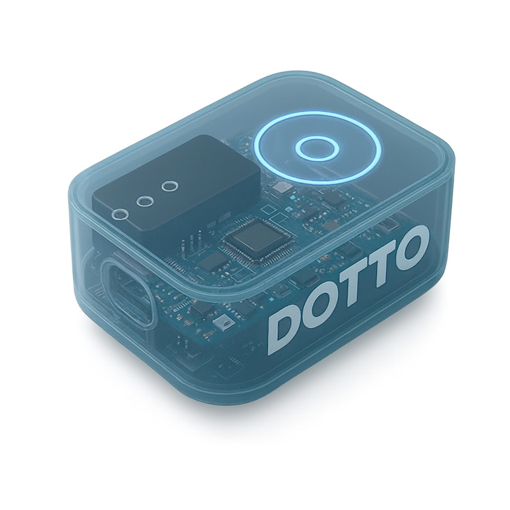
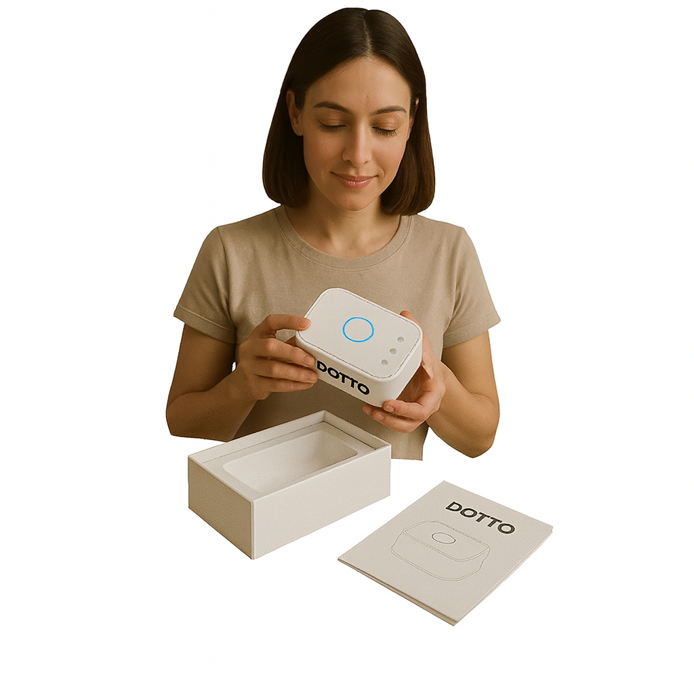

Empowering Your Data Journey
dotto is your trusted partner for advanced data solutions, from nano to big data. We help you monitor, analyze, and optimize your resources for a sustainable future.
Contact Us


Nano
Precision monitoring for the smallest details. Ideal for IoT and micro-environments.
Ultra
Advanced analytics for ultra-fast insights and decision making.
Big Data
Scalable solutions for massive data sets and enterprise needs.
About dotto
Inspired by the best in sustainable technology, dotto delivers reliable, innovative, and eco-friendly data solutions. Our mission is to empower organizations to make smarter, greener choices.